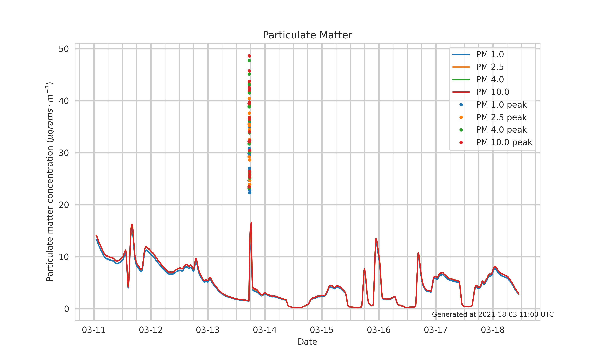

An indoor air quality monitor using particle.io
In this post, I'll discuss some hardware and a new build platform that I used to create an indoor/outdoor air quality monitor. This will be a multi-part post because it has several separate pieces of infrastructure.
In the late summer of 2020, wildfires were burning in Oregon. I saw lots of posts on twitter and other social media outlets of people constructing air filters out of box fans and household HVAC filters. I live on the East Coast, so I was not impacted, but I was curious about what the particulate matter content was inside/outside my home.
What is particulate matter and how is it measured?
Particulate matter (PM) is defined by the EPA as
a mixture of solid particles and liquid droplets found in the air. Some particles, such as dust, dirt, soot, or smoke, are large or dark enough to be seen with the naked eye.
PM2.5pose the greatest health risk because those particles are small enough to enter the bloodstream through the lungs.
The sensor I'm using measures PM by using laser diffraction. How laser diffraction works is beyond the scope of this post, and certainly has nuances that I don't fully understand. However, the basic principle is that particles of different sizes causes the angle of refraction of the laser to change. The sensor itself has 'bins' of 0.3-1 μm, 0.3-2.5 μm, 0.3-4 μm, and 0.3-10 μm, which makes interpreting the results a little tricky. The sensor reports the mass concentration in each of those bins, where each one is cumulative. In order to get the relative amounts of PM2.5vs PM10, some math would need to be done.
Hardware
Particulate matter sensor (SPS30), SparkFun Electronics, $46.95
Particle Photon SparkFun Electronics, $19.00,
SparkFun Photon Weather Shield (optional), SparkFun Electronics, $20.95
I had a grand plan of integrating those parts into an outdoor weather station (and adding an anemometer and a tipping bucket rainfall gauge). Unfortunately, that didn't work out for reasons I'll explain later. The Photon is not developed by SparkFun, but a new IoT vendor particle.io. The main selling point for me was wireless code deployment. As stated earlier, I had planned to mount everything on the end of my roof gable, so climbing up a ladder with a laptop to deploy code tweaks seemed less than ideal. particle.io also has an integrated messaging protocol, so the data gets routed through their server first, and then is able to activate webhooks and other integrations.
Connecting the particle sensor to the photon was as simple as connecting the 5V, GND, SCL, and SDA pins, as well as grounding the interface select wire to enable I2C (the sensor can use either UART or I2C).
I have mounted the sensor in my office on a no longer functioning thermostat for the baseboard heater with some 3M velcro strips. One drawback is that the board has a blue power LED, and an rgb status LED (that fades in and out to indicate it is connected to the internet). Personally, I found the lights to be distracting, so I covered them with a piece of electrical tape. I didn't put it into any sort of enclosure to help keep the board thermometer closer to ambient.
As mentioned previously, I had intended for this to be mounted outside, and it was for a month or two. Unfortunately, I found the temperature sensor to be off by several degrees due to solar radiation. I tried different enclosures, with air holes, and a dryer vent cover that was open completely on the bottom, but neither option was very helpful. If the temperature had just been off a little, I could have managed, but it would be off by 30° F during peak daylight, and only off by 5-10° F in the morning hours. There were other options that I could have tried, but I decided not to investigate any further and abandoned the plans for an outdoor weather station and focus on indoor air quality.
Embedded Software
I used the particle.io web IDE to handle the code, since that was the most streamlined way to get code from my computer to the device. I won't go through the setup process, because it is pretty well documented at https://docs.particle.io/quickstart/photon/. I had been prepared to write my own library for the SPS30, but it turns out someone else had already done so. The specific library is available here. Most of the code that I ended up using came pretty much directly from some of the examples from SparkFun and other sources. I would provide links, but I don't remember which specific ones I used. Eventually I will put the code I actually used on github. There are functions that are available in the IDE that allow the Photon to send data in the form of JSON strings to the particle.io servers, which is then triggers a webhook.
Other Software
All the other software that makes everything work is done elsewhere. Frankly, the process is a bit messy, but it works. There is a particle.io webhook that posts the data (along with an authentication token) to a server, which then stores in a database. From there, an http endpoint provides the last 7 days worth of data, which is in turn consumed by a python script to generate a graph.
One thing to note, is that the sensor has a fan that it uses to self clean. This is triggered once every 7 days, which is the source of the spike about 1/3 the way across the x axis)
Future Work
I do anticipate at least 1 more blog post involving the PM sensor, where I'll share how I got the data into an influxdb bucket and configured a dashboard and alerting.
Overall, this was a fun project. I really liked the particle.io web IDE and the hardware platform, especially for the price point. I'm not sure what else I might do in the future with the platform, but I have found it reliable.